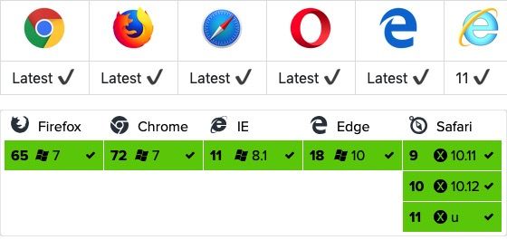

Vue3 Ajax(axios)
Vue バージョンでは、ajax リクエストを実行するために axios を使用することを推奨しています。
Axios は Promise ベースの HTTP ライブラリで、ブラウザと node.js の両方で使用できます。
GitHub オープンソースアドレス：https://github.com/axios/axios
インストール方法
CDN を使用する:
<script src="https://unpkg.com/axios/dist/axios.min.js"></script>
或
<script src="https://lf26-cdn-tos.bytecdntp.com/cdn/expire-1-M/axios/0.26.0/axios.min.js" type="application/javascript"></script>
npm を使用する:
$ npm install axios
bower を使用する:
$ bower install axios
yarn を使用する:
$ yarn add axios
使用方法
Axios モジュールからデフォルトエクスポートされた axios オブジェクトをインポートします：
import axios from 'axios';
1、GET リクエストを送信する
指定された ID のユーザーに対してリクエストを送信します：
実例
.then(function (response) {
// 成功時の処理
console.log(response);
})
.catch(function (error) {
// エラー時の処理
console.log(error);
})
.finally(function () {
// 常に実行
});
上記のリクエストは次のようにも実装できます：
実例
params: {
ID: 12345
}
})
.then(function (response) {
console.log(response);
})
.catch(function (error) {
console.log(error);
})
.finally(function () {
// 常に実行
});
async/await を使用したい場合は、外部の関数/メソッドに async キーワードを追加してください。
実例
try {
const response = await axios.get('/user?ID=12345');
console.log(response);
} catch (error) {
console.error(error);
}
}
注意：async/await は ECMAScript 2017 の一部であり、Internet Explorer や旧バージョンのブラウザではサポートされていないため、使用には注意してください。
2、POST リクエストを送信する
実例
firstName: 'Fred',
lastName: 'Flintstone'
})
.then(function (response) {
console.log(response);
})
.catch(function (error) {
console.log(error);
});
複数のリクエストを同時に実行する：
実例
return axios.get('/user/12345');
}
function getUserPermissions() {
return axios.get('/user/12345/permissions');
}
Promise.all([getUserAccount(), getUserPermissions()])
.then(function (results) {
const acct = results[0];
const perm = results[1];
});
ブラウザのサポート状況

GET メソッド
JSON データを簡単に読み取ることができます：
GET 実例
試してみる »
使用response.dataJSON データを読み取る：
GET 実例
試してみる »
GET メソッドのパラメータの受け渡し形式は次のとおりです：
パラメータの受け渡しの説明
POST メソッド
POST 実例
試してみる »
POST メソッドのパラメータの受け渡し形式は次のとおりです：
パラメータの受け渡しの説明
複数の同時リクエストを実行する
実例
axios API
axios に設定を渡すことでリクエストを作成できます。
実例
リクエストメソッドのエイリアス
使いやすくするため、公式ではサポートされているすべてのリクエストメソッドにエイリアスを提供しています。エイリアスを直接使用してリクエストを開始できます：
axios.request(config) axios.get(url[, config]) axios.delete(url[, config]) axios.head(url[, config]) axios.post(url[, data[, config]]) axios.put(url[, data[, config]]) axios.patch(url[, data[, config]])
注意：エイリアスメソッドを使用する場合、url、method、data などのプロパティは設定で指定する必要はありません。
並行
並行リクエストを処理するためのヘルパー関数：
axios.all(iterable) axios.spread(callback)
インスタンスの作成
カスタム設定を使用して新しい axios インスタンスを作成できます：
axios.create([config])
const instance = axios.create({
baseURL: 'https://some-domain.com/api/',
timeout: 1000,
headers: {'X-Custom-Header': 'foobar'}
});
インスタンスメソッド
以下は利用可能なインスタンスメソッドです。指定した設定はインスタンスの設定とマージされます：
axios#request(config) axios#get(url[, config]) axios#delete(url[, config]) axios#head(url[, config]) axios#post(url[, data[, config]]) axios#put(url[, data[, config]]) axios#patch(url[, data[, config]])
リクエスト設定項目
以下はリクエストの作成時に使用できる設定オプションです。url のみが必須であることに注意してください。method を指定しない場合、リクエストはデフォルトで get メソッドを使用します。
{
// `url` 是用于请求的服务器 URL
url: "/user",
// `method` 是创建请求时使用的方法
method: "get", // 默认是 get
// `baseURL` 将自动加在 `url` 前面，除非 `url` 是一个绝对 URL。
// 它可以通过设置一个 `baseURL` 便于为 axios 实例的方法传递相对 URL
baseURL: "https://some-domain.com/api/",
// `transformRequest` 允许在向服务器发送前，修改请求数据
// 只能用在 "PUT", "POST" 和 "PATCH" 这几个请求方法
// 后面数组中的函数必须返回一个字符串，或 ArrayBuffer，或 Stream
transformRequest: [function (data) {
// 对 data 进行任意转换处理
return data;
}],
// `transformResponse` 在传递给 then/catch 前，允许修改响应数据
transformResponse: [function (data) {
// 对 data 进行任意转换处理
return data;
}],
// `headers` 是即将被发送的自定义请求头
headers: {"X-Requested-With": "XMLHttpRequest"},
// `params` 是即将与请求一起发送的 URL 参数
// 必须是一个无格式对象(plain object)或 URLSearchParams 对象
params: {
ID: 12345
},
// `paramsSerializer` 是一个负责 `params` 序列化的函数
// (e.g. https://www.npmjs.com/package/qs, http://api.jquery.com/jquery.param/)
paramsSerializer: function(params) {
return Qs.stringify(params, {arrayFormat: "brackets"})
},
// `data` 是作为请求主体被发送的数据
// 只适用于这些请求方法 "PUT", "POST", 和 "PATCH"
// 在没有设置 `transformRequest` 时，必须是以下类型之一：
// - string, plain object, ArrayBuffer, ArrayBufferView, URLSearchParams
// - 浏览器专属：FormData, File, Blob
// - Node 专属： Stream
data: {
firstName: "Fred"
},
// `timeout` 指定请求超时的毫秒数(0 表示无超时时间)
// 如果请求花费了超过 `timeout` 的时间，请求将被中断
timeout: 1000,
// `withCredentials` 表示跨域请求时是否需要使用凭证
withCredentials: false, // 默认的
// `adapter` 允许自定义处理请求，以使测试更轻松
// 返回一个 promise 并应用一个有效的响应 (查阅 [response docs](#response-api)).
adapter: function (config) {
/* ... */
},
// `auth` 表示应该使用 HTTP 基础验证，并提供凭据
// 这将设置一个 `Authorization` 头，覆写掉现有的任意使用 `headers` 设置的自定义 `Authorization`头
auth: {
username: "janedoe",
password: "s00pers3cret"
},
// `responseType` 表示服务器响应的数据类型，可以是 "arraybuffer", "blob", "document", "json", "text", "stream"
responseType: "json", // 默认的
// `xsrfCookieName` 是用作 xsrf token 的值的cookie的名称
xsrfCookieName: "XSRF-TOKEN", // default
// `xsrfHeaderName` 是承载 xsrf token 的值的 HTTP 头的名称
xsrfHeaderName: "X-XSRF-TOKEN", // 默认的
// `onUploadProgress` 允许为上传处理进度事件
onUploadProgress: function (progressEvent) {
// 对原生进度事件的处理
},
// `onDownloadProgress` 允许为下载处理进度事件
onDownloadProgress: function (progressEvent) {
// 对原生进度事件的处理
},
// `maxContentLength` 定义允许的响应内容的最大尺寸
maxContentLength: 2000,
// `validateStatus` 定义对于给定的HTTP 响应状态码是 resolve 或 reject promise 。如果 `validateStatus` 返回 `true` (或者设置为 `null` 或 `undefined`)，promise 将被 resolve; 否则，promise 将被 rejecte
validateStatus: function (status) {
return status >= 200 && status < 300; // 默认的
},
// `maxRedirects` 定义在 node.js 中 follow 的最大重定向数目
// 如果设置为0，将不会 follow 任何重定向
maxRedirects: 5, // 默认的
// `httpAgent` 和 `httpsAgent` 分别在 node.js 中用于定义在执行 http 和 https 时使用的自定义代理。允许像这样配置选项：
// `keepAlive` 默认没有启用
httpAgent: new http.Agent({ keepAlive: true }),
httpsAgent: new https.Agent({ keepAlive: true }),
// "proxy" 定义代理服务器的主机名称和端口
// `auth` 表示 HTTP 基础验证应当用于连接代理，并提供凭据
// 这将会设置一个 `Proxy-Authorization` 头，覆写掉已有的通过使用 `header` 设置的自定义 `Proxy-Authorization` 头。
proxy: {
host: "127.0.0.1",
port: 9000,
auth: : {
username: "mikeymike",
password: "rapunz3l"
}
},
// `cancelToken` 指定用于取消请求的 cancel token
// （查看后面的 Cancellation 这节了解更多）
cancelToken: new CancelToken(function (cancel) {
})
}
レスポンス構造
axios リクエストのレスポンスには以下の情報が含まれます：
{
// `data` 由服务器提供的响应
data: {},
// `status` HTTP 状态码
status: 200,
// `statusText` 来自服务器响应的 HTTP 状态信息
statusText: "OK",
// `headers` 服务器响应的头
headers: {},
// `config` 是为请求提供的配置信息
config: {}
}
then を使用すると、次のようなレスポンスを受け取ります：
axios.get("/user/12345")
.then(function(response) {
console.log(response.data);
console.log(response.status);
console.log(response.statusText);
console.log(response.headers);
console.log(response.config);
});
使用する場合catch、または渡す場合rejection callbackとしてthenの2番目の引数とする場合、レスポンスはerrorオブジェクトを使用してアクセスできます。
設定のデフォルト値
各リクエストで使用される設定のデフォルト値を指定できます。
グローバルな axios デフォルト値：
axios.defaults.baseURL = 'https://api.example.com'; axios.defaults.headers.common['Authorization'] = AUTH_TOKEN; axios.defaults.headers.post['Content-Type'] = 'application/x-www-form-urlencoded';
カスタムインスタンスのデフォルト値：
// 创建实例时设置配置的默认值
var instance = axios.create({
baseURL: 'https://api.example.com'
});
// 在实例已创建后修改默认值
instance.defaults.headers.common['Authorization'] = AUTH_TOKEN;
設定の優先順位
設定は優先順位に従ってマージされます。その順序は、lib/defaults.js にあるライブラリのデフォルト値、次にインスタンスの defaults プロパティ、最後にリクエストの config パラメータです。後者が前者よりも優先されます。次に例を示します：
// 使用由库提供的配置的默认值来创建实例
// 此时超时配置的默认值是 `0`
var instance = axios.create();
// 覆写库的超时默认值
// 现在，在超时前，所有请求都会等待 2.5 秒
instance.defaults.timeout = 2500;
// 为已知需要花费很长时间的请求覆写超时设置
instance.get('/longRequest', {
timeout: 5000
});
インターセプター
リクエストまたはレスポンスが then や catch で処理される前にそれらをインターセプトします。
// 添加请求拦截器
axios.interceptors.request.use(function (config) {
// 在发送请求之前做些什么
return config;
}, function (error) {
// 对请求错误做些什么
return Promise.reject(error);
});
// 添加响应拦截器
axios.interceptors.response.use(function (response) {
// 对响应数据做点什么
return response;
}, function (error) {
// 对响应错误做点什么
return Promise.reject(error);
});
後でインターセプターを削除したい場合は、次のようにします：
var myInterceptor = axios.interceptors.request.use(function () {/*...*/});
axios.interceptors.request.eject(myInterceptor);
カスタム axios インスタンスにインターセプターを追加できます。
var instance = axios.create();
instance.interceptors.request.use(function () {/*...*/});
エラー処理：
axios.get('/user/12345')
.catch(function (error) {
if (error.response) {
// 请求已发出，但服务器响应的状态码不在 2xx 范围内
console.log(error.response.data);
console.log(error.response.status);
console.log(error.response.headers);
} else {
// Something happened in setting up the request that triggered an Error
console.log('Error', error.message);
}
console.log(error.config);
});
validateStatus 設定オプションを使用して、カスタム HTTP ステータスコードのエラー範囲を定義できます。
axios.get('/user/12345', {
validateStatus: function (status) {
return status < 500; // 状态码在大于或等于500时才会 reject
}
})
キャンセル
cancel token を使用してリクエストをキャンセルします。
Axios の cancel token API はcancelable promises proposal
CancelToken.source ファクトリメソッドを使用して cancel token を作成できます。次のようにします：
var CancelToken = axios.CancelToken;
var source = CancelToken.source();
axios.get('/user/12345', {
cancelToken: source.token
}).catch(function(thrown) {
if (axios.isCancel(thrown)) {
console.log('Request canceled', thrown.message);
} else {
// 处理错误
}
});
// 取消请求（message 参数是可选的）
source.cancel('Operation canceled by the user.');
CancelToken のコンストラクタに executor 関数を渡すことでも cancel token を作成できます：
var CancelToken = axios.CancelToken;
var cancel;
axios.get('/user/12345', {
cancelToken: new CancelToken(function executor(c) {
// executor 函数接收一个 cancel 函数作为参数
cancel = c;
})
});
// 取消请求
cancel();
注意：同じ cancel token を使用して複数のリクエストをキャンセルできます。
リクエスト時に application/x-www-form-urlencoded を使用する
axios はデフォルトで JavaScript オブジェクトを JSON にシリアライズします。 application/x-www-form-urlencoded 形式を使用したい場合は、以下の設定を使用できます。
ブラウザ
ブラウザ環境では、URLSearchParams API を使用できます：
const params = new URLSearchParams();
params.append('param1', 'value1');
params.append('param2', 'value2');
axios.post('/foo', params);
URLSearchParams はすべてのブラウザでサポートされているわけではありません。
その他に、qs ライブラリを使用してデータをエンコードできます：
const qs = require('qs');
axios.post('/foo', qs.stringify({ 'bar': 123 }));
// Or in another way (ES6),
import qs from 'qs';
const data = { 'bar': 123 };
const options = {
method: 'POST',
headers: { 'content-type': 'application/x-www-form-urlencoded' },
data: qs.stringify(data),
url,
};
axios(options);
Node.js 環境
node.js では、querystring モジュールを使用できます：
const querystring = require('querystring');
axios.post('http://something.com/', querystring.stringify({ foo: 'bar' }));
もちろん、ブラウザと同様に、qs ライブラリも使用できます。
Promises
axios はネイティブの ES6 Promise 実装に依存してサポートされています。
環境が ES6 Promise をサポートしていない場合は、使用できますpolyfill。
TypeScript サポート
axios には TypeScript の定義が含まれています。
import axios from "axios";
axios.get("/user?ID=12345"); その他の拡張機能
クリックしてノートを共有
<p style="font-size:14px;">ノートはこの記事の内容の拡張である必要があります！</p><br> <p style="font-size:12px;"><a href="../tougao.html" target="_blank">記事投稿は、ここをクリック</a></p> <p style="font-size:14px;"><a href="../w3cnote/runoob-user-test-intro.html" target="_blank">登録招待コードの取得方法</a></p> <h3 class="text-muted"><i class="fa fa-info-circle" aria-hidden="true"></i> ノートを共有する前に<a href=";.html" class="runoob-pop">ログイン</a>が必要です！</h3> <p><a href="../w3cnote/runoob-user-test-intro.html" target="_blank">登録招待コードの取得方法</a></p>